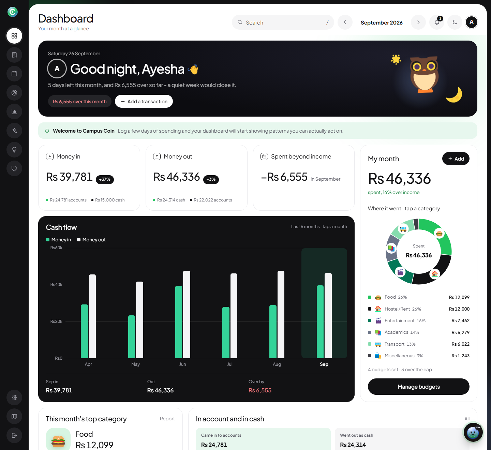
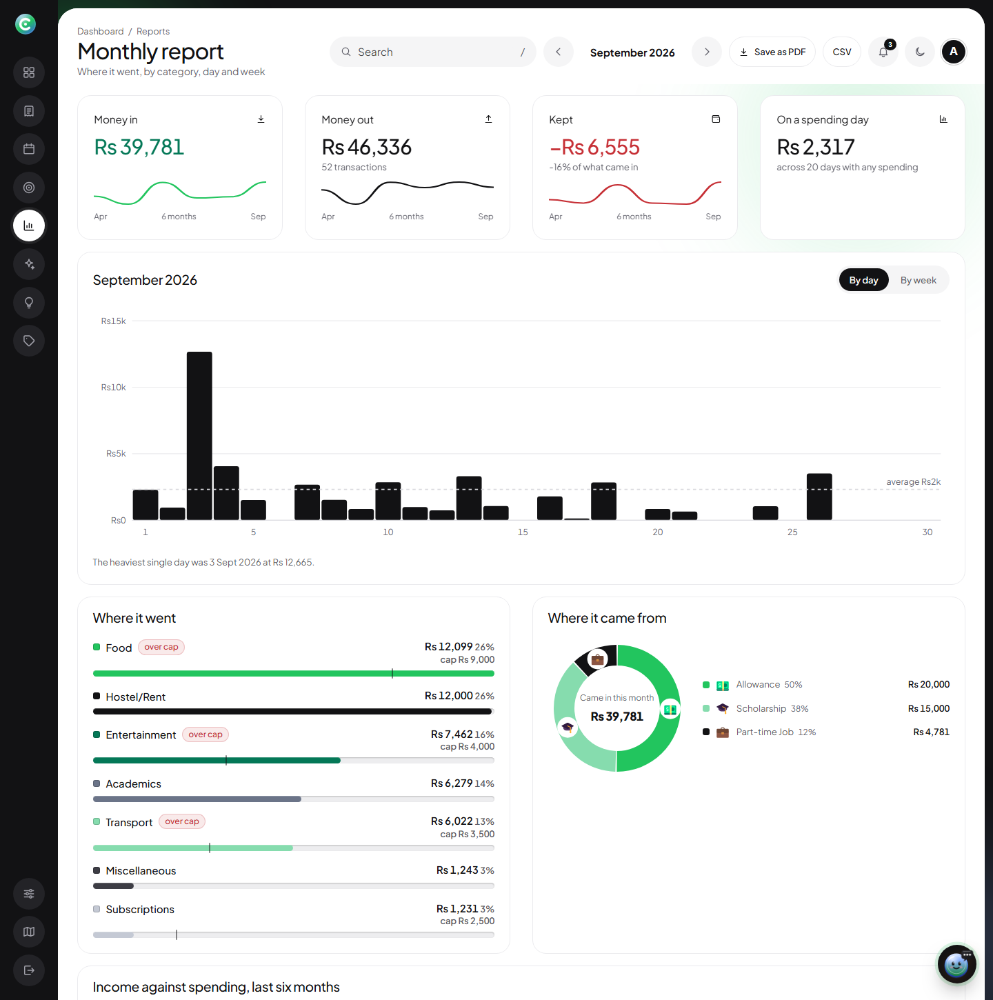
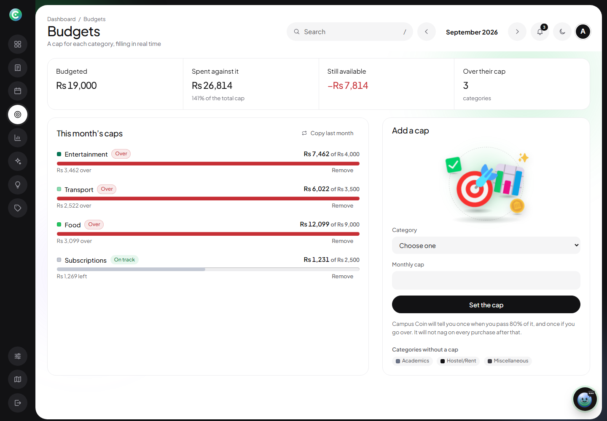
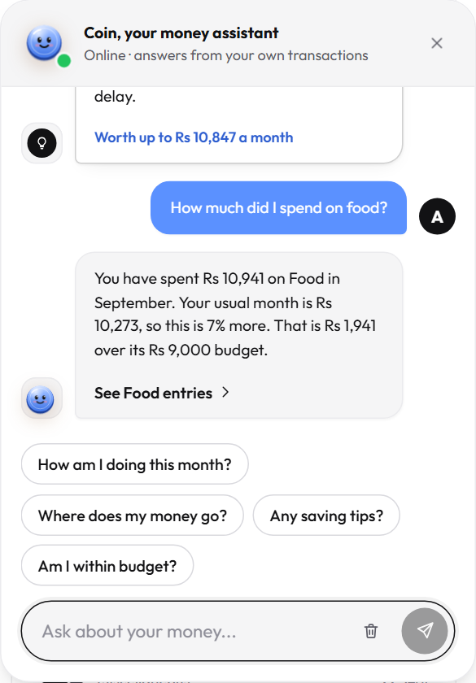
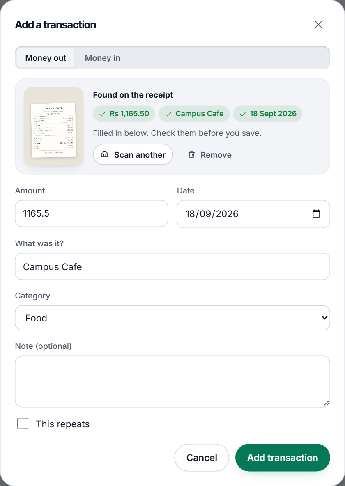
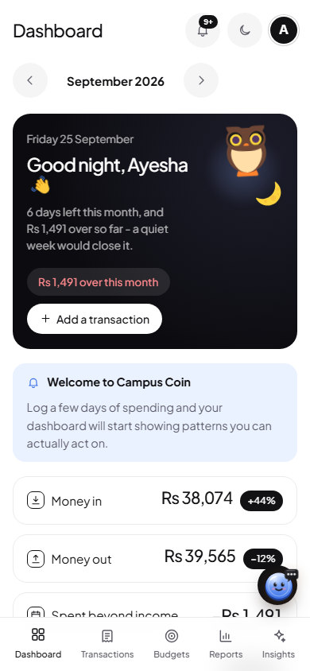

A budget and expense tracker built for an allowance that lands when it lands — not for a salary and a bank feed.
Students are paid irregularly — an allowance when it arrives, a bit of tutoring money, a scholarship instalment — and general personal-finance apps assume a salary and a bank feed. Every one of them is either built for someone else's money or asks for a bank login a student does not have. Campus Coin assumes neither: no linked account, no subscription, nothing to connect — just a fast way to log what actually happened and advice built from that student's own numbers, not a stranger's average.
Everything is entered by hand or imported from a CSV, and every piece of advice the application gives is built from the student's own transactions. Nothing is generic: a saving tip quotes real figures from that student's history, and the chat assistant answers from the same aggregations the reports are drawn from, so the two can never disagree.
A MongoDB server is optional. With no connection string
configured the application starts its own embedded MongoDB and stores it
in server/data/db, so it installs and demonstrates every
feature with an empty configuration file.
Built with Claude Code (Anthropic) as a coding and documentation assistant throughout — implementation, debugging, this report's diagrams and build scripts, and its PDF-export tooling. It was used as an assistant, not a template generator: no part of the application was produced from a ready-made site or theme, and every design and architecture decision in this document is one its author can explain and defend. The application's own optional AI features (the categorisation assistant and Coin's monthly insight, section 09) call the Claude API directly and are a separate, documented part of the product itself, not a documentation shortcut.
Requirements: Node.js 18 or newer.
# 1. Install both halves npm run setup # 2. Copy the environment template (all values are optional for a local run) cp server/.env.example server/.env # 3. Build the React front end npm run build # 4. Start it npm start
Open http://localhost:5000. The first start seeds the default categories, the administrator and two demo students with six months of history, so every chart, budget and tip has real data behind it immediately.
Two terminals, so the front end hot-reloads:
npm run dev # API on http://localhost:5000 npm run dev:client # React on http://localhost:5173 (proxies /api to the API)
With the server running (npm start), in a second terminal:
npm run test:e2e --prefix server
It registers a throwaway student and works through every functional requirement in the SRS — sign-up, login, password rules, reset, lockout and sessions, profile, categories, income and expenses, recurring entries, CSV import and export, the categoriser learning from corrections, anomaly flags, budgets and alerts, reports and filters, insights, tips, sharing, the chat assistant and every administrator control — then deletes the account. It prints PASS or FAIL for each of its 62 checks.
npm run seed
Seeding only fills what is missing; it never overwrites existing data. To
start completely fresh, delete server/data/ first.
server/src/seed/seed.js runs automatically on first start (and
again, safely, on every later one) and writes:
back = 5 down to
0 in the seed loop), income and expenses spread across the
categories above with Food deliberately drifting upward in the most
recent two months, so the anomaly and trend features have something real
to notice on a machine that was only just installed.| Role | Password | |
|---|---|---|
| Administrator | admin@campuscoin.app | Admin@12345 |
| Student | student@campuscoin.app | Student@12345 |
| Student | bilal@campuscoin.app | Student@12345 |
Students sign in at /login. The administrator has a
separate, direct-access sign-in at /admin/login,
which posts to its own endpoint and refuses any account that is not an
administrator — a student's password is useless there even with the URL.
The demo accounts are shared, so their passwords are fixed: they cannot be changed, reset or locked out, and anyone evaluating the application can always sign in with the table above. Register a new account to exercise the password features.
The SRS asks for secure sessions, hashed passwords, and recovery through a tokenised link. How Campus Coin does each.
Passwords are hashed with bcrypt (cost 10, a salt per password) and never
stored or logged in readable form (server/src/models/User.js).
At least 8 characters, letters and numbers, not one of the most common
passwords and not built from the account's own name or email
(server/src/utils/passwords.js). The sign-up, reset and change
forms show the same rules as a live checklist with a strength meter.
"Forgot password" emails a random 64-character token that works once, for one hour; only its SHA-256 hash is stored. The reset page checks the link before showing the form and says so plainly when it has expired. The live site sends real email through Gmail (SMTP with an app password, kept in Vercel's encrypted settings, never in the code), and there the link is only ever emailed — showing it on screen would let anyone who knows an address reset that account. On a development machine with no email set up, the link is shown on screen instead so the flow can still be demonstrated. The reply is the same whether or not the email has an account, so the form cannot be used to find accounts.
There is no form that sets a new password directly: "Change password" in
Settings emails a one-time, one-hour link to the account's own address, and
the new password is chosen from that link — so a stolen, still-signed-in
session is not enough to take over an account. The old in-place endpoint
answers 410 Gone.
Every sign-in token carries the account's session version. Changing or resetting the password raises it, which signs out every other device at once; Settings also has Sign out everywhere. A disabled account loses access immediately.
Five wrong passwords in a row lock sign-in for 15 minutes; a password reset lifts the lock.
The administrator can issue a temporary password (random, from the crypto module, shown once). It signs the student out everywhere, and every page asks them to choose their own until they do.
A password change or reset sends a "your password was changed" email, so an
account holder notices one they did not make. Welcome, password-link,
"password changed" and monthly summary emails share one HTML layout
(server/src/services/emailTemplate.js): a PNG banner (Gmail
does not show SVG), a 600px table with inline styles, one button, and a
plain-text version alongside.
Everything in server/.env is optional. The application is
designed to run and demonstrate every feature with an empty file.
| Variable | What it does when set | What happens when it is not |
|---|---|---|
MONGO_URI |
Uses that MongoDB (local or Atlas) | Starts an embedded MongoDB in server/data/db |
JWT_SECRET |
Signs session tokens | A development default is used |
SMTP_HOST, SMTP_PORT, SMTP_USER, SMTP_PASS, MAIL_FROM |
Sends password-reset links, "password changed" alerts and shared reports. For Gmail: smtp.gmail.com, port 465, the address, and a 16-character app password |
On a development machine the reset link is shown on screen instead; on a live deployment nothing is sent and no link is shown |
ANTHROPIC_API_KEY |
Monthly summaries are rewritten by Claude | Summaries come from the built-in statistical engine |
CRON_SECRET |
Protects the daily recurring-transaction endpoint | The endpoint refuses all callers; the local server runs the job on a timer anyway |
| Layer | What was used, and what was not |
|---|---|
| Front end | React 18 with React Router, built by Vite. No UI framework and no component library: the design system, the layout and all four chart types are written from scratch in CSS and SVG (client/src/styles/, client/src/components/Charts.jsx). |
| Back end | Node.js with Express 5 and Mongoose. |
| Database | MongoDB, with an embedded instance as the zero-configuration fallback. |
| Deployment | Configured for Vercel (vercel.json + api/index.mjs), with the API as a serverless function and the built client served as static files. |
Everything that makes a judgement lives in server/src/services/,
separately from the routes that serve it.
| File | What it decides |
|---|---|
analytics.js | The shared aggregations. Reports, tips, insights and the forecast all read their numbers from here, so they can never disagree with each other. |
categorizer.js | Suggests a category from a description. |
tips.js | Builds the saving tips and estimates what each is worth. |
insights.js | Writes the monthly summary. |
anomaly.js | Flags unusually large and duplicate transactions. |
forecast.js | Projects next month. |
recurring.js | Writes recurring entries when they come due. |
alerts.js | Raises budget warnings. |
csv.js | Imports and exports transaction files. |
chat.js | Works out what a chat question is asking and answers it from the figures above. |
llm.js | Optional: rewrites an already-computed summary in warmer language, and answers chat questions the rules did not recognise. |
How a request moves through the system, and how the database is shaped - drawn rather than described, so the two can be checked against each other.
The whole application as one process, and everyone and everything outside
it that it exchanges data with. Two of the four are optional: email only
sends where SMTP_* is configured, and Claude is only asked
where ANTHROPIC_API_KEY is set - without either, the
equivalent built-in engine answers instead (section 09). Scanning a
receipt is deliberately not on this diagram: the photo is read by
Tesseract OCR inside the student's own browser and never reaches the
server, so it is not a flow this system's boundary has.
The same boundary, opened up into the seven processes a request actually
reaches and the five stores they read and write. This is the layer
server/src/services/ is organised at (section 07's table names
each engine); the student-facing routes are 2.0, 5.0 and 6.0, and 7.0 is the
only one an administrator can reach.
The one activity every other feature depends on having real data for, walking through the three judgement calls section 09 explains in detail: the category the assistant suggests, whether the amount looks wrong, and whether it pushes a budget over.
The tokenised-link recovery section 04 describes, as a flow. The password itself never travels except in this last step, and only over the link the student's own inbox received.
MongoDB has no .sql script; a Mongoose schema is the
equivalent structural definition, and that is what is reproduced below —
the real field list from server/src/models/*.js, one file per
collection, not the SRS's illustrative example. Every reference (ref)
is an ObjectId pointing at another collection's _id, drawn as
an arrow in Figure D5 above: User is the one everything else
points back to; Category is shared, since a default category
has no owner and every student's own categories sit in the same
collection; Transaction is the busiest table, with two
optional links of its own — aiSuggestedCategory, kept so the
categoriser can tell whether its guess was accepted, and
recurringParent, a transaction pointing at the rule that
generated it.
One row per account, student or administrator.
| Field | Type | Notes |
|---|---|---|
name | String | Required. |
email | String | Required, unique, lower-cased. |
passwordHash | String | bcrypt, cost 10. Never returned by a query unless explicitly selected. |
role | enum | student | admin. |
academicYear, institution | String | Profile fields (SRS 1.6). |
monthlyAllowance, savingsGoal | Number | The dashboard's goal ring reads savingsGoal. |
currency | enum | PKR, USD, EUR, GBP, INR or AED. |
avatar, avatarColor | String | An optional photo as a small data URL; a coloured-initial fallback otherwise. |
preferences | Object | theme, fontScale, reducedMotion, alertsEnabled — the accessibility settings. |
tokenVersion | Number | Bumped on a password change or "sign out everywhere"; every older session token stops working. |
resetTokenHash, resetTokenExpires | String, Date | Only the hash of a reset token is stored. Not selected by default. |
failedLogins, lockUntil | Number, Date | Sign-in lockout after repeated wrong passwords. Not selected by default. |
disabled, mustChangePassword | Boolean | Set by an administrator. |
A system default (owner: null) or one student's own.
| Field | Type | Notes |
|---|---|---|
name, type | String, enum | income | expense. Unique together with owner. |
owner | ObjectId → User | null for the twelve defaults, seeded once and shared by every account. |
isDefault, archived | Boolean | Archived categories keep their history but drop out of the add-transaction list. |
icon | String | Which Fluent Emoji SVG represents this category. |
slot | Number 1–7 | A position in the validated categorical palette, not a raw colour, so light and dark mode each pick their own correct shade. |
keywords | [String] | Seed words for the categorisation assistant, refined by CategoryHint below. |
Every logged rupee, income or expense.
| Field | Type | Notes |
|---|---|---|
user, category | ObjectId → User, Category | Both required. |
type, amount | enum, Number | income | expense; amount must be greater than zero. |
description, note | String | What the student typed; description is also what the categorisation assistant reads. |
date, month | Date | month is date rounded down to the 1st, written automatically before every save, so reports group by month without a date pipeline. |
method, methodLabel | enum, String | cash, bank, easypaisa, jazzcash, sadapay, nayapay, card, or other (named in methodLabel) — where the money actually moved. |
aiSuggestedCategory, aiAccepted | ObjectId, Boolean | What the assistant proposed, and whether the student kept it — the correction that trains CategoryHint. |
recurring | Object | enabled, frequency (weekly/monthly/yearly), nextRun, endsOn — the rule, held on the parent row. |
recurringParent | ObjectId → Transaction | Set on every row a rule generated, pointing back at that rule. |
source | enum | manual | csv | recurring. |
receipt, hasReceipt | String, Boolean | The photo is excluded from every list query by default (select: false) and fetched only when a single transaction is opened. |
flags | [String] | duplicate and/or large, written by the anomaly check. |
One spending cap per category per month.
| Field | Type | Notes |
|---|---|---|
user, category, month | ObjectId, ObjectId, Date | Unique together — one cap per category per month. |
limitAmount | Number | ≥ 0. |
alertedAt | Number | The highest threshold (80 or 100) already warned about, so a student hears once per level rather than on every transaction. |
The stored monthly summary Coin writes (SRS 1.6, "stores insight history").
| Field | Type | Notes |
|---|---|---|
user, month | ObjectId, Date | Unique together — one insight per student per month. |
summaryText, tipText | String | The narrative, and the one piece of advice tied to it. |
highlights | [Object] | Categories that moved against the student's own trend: name, amount, previous amount, change%, direction. |
stats | Object | income, expense, balance, savingsRate, topCategory, transactionCount — a frozen copy of the figures the summary was written from. |
engine | enum | statistical (the built-in writer) or llm (Claude rewrote it) — see section 09. |
bookmarked | Boolean | SRS 1.6, "bookmarks a saving tip or monthly insight". |
The four smaller collections behind the tips engine, the categorisation assistant, the bell menu and admin broadcasts.
| Collection | Key fields | Purpose |
|---|---|---|
Tip |
user, key, title, body, impact, status |
One saving tip. key identifies the same piece of advice across regenerations, so a pin or a dismissal (status: pinned | dismissed) survives the tips engine running again. |
CategoryHint |
user, token, category, count |
A per-student word-to-category frequency table. Every save adds to it; a correction reinforces a different pairing — the memory behind the categorisation assistant learning from that student alone. |
Notification |
user, kind, title, body, link, read |
Budget warnings, anomaly flags and admin announcements, in one bell menu. kind is one of budget-warning, budget-exceeded, anomaly, insight or announcement. |
Announcement |
title, body, kind, active, createdBy |
Written by an administrator (SRS 1.6, "system-wide announcement or tip templates"); shown on every student dashboard while active. |
The SRS asks for AI assistance in two places, and for a chatbot. They are separate features, and a language model is only ever an optional finishing step: every figure is calculated by Campus Coin itself.
Runs entirely on Campus Coin's own server. Each word of a description is
counted against the category the student actually chose, building a
per-student word-to-category frequency table (CategoryHint).
Correcting a suggestion is what teaches it: the correction records a
different pairing than the one that was proposed, so the next guess leans
the other way. A new account starts from seed keywords on the default
categories until it has a history of its own. Every suggestion shows its
confidence and its reason, and can always be overridden.
Computes every figure from the database first, then — only if
ANTHROPIC_API_KEY is set — asks Claude to rewrite those
already-computed facts in friendlier language. The model is never asked to
do arithmetic, so a summary cannot contradict the report it came from.
Without a key the built-in statistical writer produces the summary instead,
and the feature reports which one wrote it.
The SRS's "AI ChatBot" lives in the bubble in the corner of every student
page; what it has learned, and a button to make it forget, are in Settings.
It is built in rather than embedded from tawk.to or Tidio, because a
third-party widget cannot see the student's data. A rule-based router in
chat.js recognises the kind of question being asked (balance,
one category, the category breakdown, budgets, the forecast, the largest
expense, saving tips, "can I afford 2,500?", "which category is chai at the
canteen?", this month against last) and answers from the same aggregations
the reports use. Only a question no rule recognises is passed to Claude, and
only if a key is set, together with a sheet of already-computed facts and an
instruction to use nothing else. The conversation is kept in the browser tab
and is never stored on the server.
This is Coin. The same disc as the logo, with eyes — so the mark on the tab and the face answering a question are visibly the same thing, not two different pieces of clip art.
The SRS's optional OCR. In the add-transaction form a student takes or drops
a photo of a receipt (or tries one of the two samples in
client/public/samples). The photo is shrunk in the browser and
read with Tesseract OCR, also in the browser — no API key and nothing is
uploaded to be read. Plain rules in client/src/lib/receipt.js
then pick out the amount paid (preferring "grand total", "net payable" and
"total" lines and ignoring subtotal, tax, cash and change), the shop and the
date, fill the form, and let the categoriser suggest the category. The
student checks everything before saving.
Not AI at all. Each rule compares this month against the student's own three-month average and states how much money the advice is worth per month; the list is ranked by that figure. No tip is generic — every one quotes real numbers from that student's history.
A least-squares line through the last six months. It refuses to answer with fewer than three months of data and reports how far the line typically sits from the actual points, rather than implying precision it does not have.
None of this is financial advice, and the interface says so where it matters.
The interface is written rather than assembled. This section is also the SRS's design specification — the decisions behind the interface, named rather than left to be inferred from the screens in section 13.
Both are designed against their own surface rather than one being an inversion of the other. The choice is saved to the device and the account, so it follows the student to another machine. Settings also offers "match my device", which follows the operating system live.
The application sits in a black frame with a slim rail of round icon buttons
that slides open on hover to show each page's name; the content is one white
panel with large rounded corners, buttons are black pills, and one green
(#22c55e) carries the figures. Categories take shades of green
and grey. Headings and figures are set in Geist, cut for a
dashboard rather than adapted from a text face; body copy and tables are
Inter, for its legibility in a row of transactions. The
styles live in client/src/styles/design9.css; the code and
all the copy are our own.
Every category has its own object — a burger for Food, a bus for Transport,
a house for Hostel/Rent — drawn from Microsoft's Fluent Emoji
in the flat style (MIT licence). Only the 49 SVGs the application uses are
copied into client/src/assets/emoji, with the licence beside
them, so nothing is fetched from outside. Menu and button icons stay as
clean line icons (Icon.jsx), drawn on one 24px grid following
the Lucide conventions.
When a transaction names a company — "Netflix share", "Foodpanda dinner",
"Spotify Premium", "Daraz", "JazzCash", "PTCL" — the list shows that
company's logo on its brand colour instead of the category picture
(client/src/lib/brands.js). The logos come from
Simple Icons (CC0), bundled with the application. Careem
and inDrive are not in that set, so they get a tile in their brand colour
with their initial rather than an imitation logo. The logos only identify
the merchant; Campus Coin is not affiliated with them.
Money in against money out is drawn as paired bars built from HTML
(MonthBars in DashCharts.jsx), so the scale,
months and figures stay full size on any screen instead of shrinking with an
SVG. Tapping a month shows its three figures. The trend lines on the report
cards are labelled with their first and last month.
A personal greeting; the month's balance as money in against money out; quick-add buttons (chai, rickshaw, printing, allowance) that open the form already filled in; saving tips and Coin's insight built from the student's own history; and the two named widgets — This Month's Top Category (its picture, amount and share) and Budget vs. Actual (each budget's cap against what was spent, with a status). Categories has a Manage Own Categories section for adding, editing and deleting personal income and expense categories beside the defaults.
Every transaction also records where the money moved — cash, a bank transfer, a card, or a named wallet (Easypaisa, JazzCash, SadaPay, NayaPay), with a typed name and its own colour for anything else. The In account and in cash dashboard card splits the month both ways: what came in to an account against what came in as notes, and the reverse for spending, each expandable into the individual places the money actually went. The calendar and the Transactions filter answer the same question at the day and the row: a "Paid with" filter, and a mark beside every entry. Coin understands it too — "how much cash did I spend", "how much came in through Easypaisa" — through the same aggregation the dashboard reads, so the two can never disagree. It is deliberately not a running balance: the application never sees a transfer between two of a student's own places, so a true "cash in hand" figure would drift wrong the first time an ATM withdrawal was spent as notes. Reporting the two flows honestly, rather than guessing a number it cannot back up, is the more defensible choice — and the more informative one, since most students are paid digitally and spend the difference as cash.
Sections arrive top to bottom, charts draw themselves (the donut sweeps in ranked order, lines trace, bars grow), headline figures count up, and budget bars fill — the SRS's "smooth transitions while charts and insights are generated". Every entrance ends at the element's normal resting style, so with the system's reduced-motion setting on, pages simply appear complete.
Text size is adjustable from Settings and scales the whole interface,
charts included. Keyboard focus is always visible,
prefers-reduced-motion is respected, the layout works down to
360px, and every chart is backed by a table of the same numbers.
MONGO_URI (or connect
the Atlas integration, which provides MONGODB_URI).
This is required — the embedded database cannot run in a
serverless function.
JWT_SECRET and CRON_SECRET.vercel.json handles the build, the API routing and the
daily cron that writes recurring transactions.
server/src/models/*.js) as the ".sql or schema files" the SRS asks forserver/src/seed/)/ and /sitemapThe screens a student meets, in the order they meet them.






Every figure in this report came from the student's own numbers, the same way every figure Coin gives back in the app does — never invented, never guessed, and never financial advice.
Campus Coin · Project Report